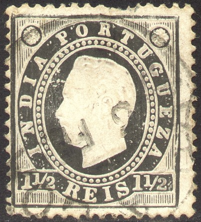
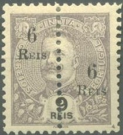

Return To Catalogue - Portuguese India first primitive issues - Portuguese India Crown issue - Portuguese India 1914-1920 and miscellaneous - Portugal
Note: on my website many of the
pictures can not be seen! They are of course present in the
catalogue;
contact me if you want to purchase the catalogue.
For stamps of Portuguese India with Crown design, click here.
1 1/2 r black 4 1/2 r olive 6 r green 1 T red 2 T blue 4 T lilac 8 T orange Surcharged with fancy letters (1902)

'1 REAL' on 2 T blue '2 REIS' on 4 1/2 r olive '2 1/2 REIS' on 6 r green '3 REIS' on 1 T red '2 1/2 TANGAS' (red) on 1 1/2 r black '2 1/2 TANGAS' on 4 T lilac '5 TANGAS' on 8 T orange Bisected stamps (and surcharged with fancy letters) and surcharged a second time (1911)
'1 REAL' on half of '5 TANGAS' on 8 T orange 2 r on half of '2 1/2 REIS' on 6 r green 3 r on half of '5 TANGAS' on 8 T orange Overprinted "REPUBLICA" and surcharged with fancy letters (1913)
"REPUBLICA" (black) on '1 REAL' on 2 T blue "REPUBLICA" (red) on '2 REIS' on 4 1/2 r olive "REPUBLICA" (red) on '2 1/2 REIS' on 6 r green "REPUBLICA" (red) on '3 REIS' on 1 T red "REPUBLICA" (red) on '2 1/2 TANGAS' on 4 T lilac "REPUBLICA" (red) on '5 TANGAS' on 8 T orange
Value of the stamps |
|||
vc = very common c = common * = not so common ** = uncommon |
*** = very uncommon R = rare RR = very rare RRR = extremely rare |
||
| Value | Unused | Used | Remarks |
| 1 1/2 r | c | c | |
| 4 1/2 r | c | c | |
| 6 r | c | c | |
| 1 T | * | * | |
| 2 T | * | * | |
| 4 T | ** | * | |
| 8 T | ** | * | |
| Surcharged with fancy letters | |||
| 1 r on 2 T | c | c | |
| 2 r on 4 1/2 r | c | c | |
| 2 1/2 r on 6 r | c | c | |
| 3 r on 1 T | * | c | |
| 2 1/2 T on 1 1/2 r | * | * | |
| 2 1/2 T on 4 T | * | * | |
| 5 T on 8 T | * | * | |
Bisected and surcharged twice |
|||
| 1 r on 5 T on 8 T | ** | ** | |
| 2 r on 2 1/2 r on 6 r | ** | ** | |
| 3 r on 5 T on 8 T | * | * | |
| Overprinted "REPUBLICA" and surcharged | |||
| 1 r on 2 T | *** | *** | |
| 2 r on 4 1/2 r | *** | *** | |
| 2 1/2 r on 6 r | c | c | |
| 3 r on 1 T | *** | *** | |
| 2 1/2 T on 4 T | R | R | |
| 5 T on 8 T | ** | ** | |

With typical cancel
I've seen reprints with a black horizontal line printed at the top part of the stamp.

1 1/2 r black 4 1/2 r yellow 6 r green 9 r lilac 1 T blue 2 T red 4 T blue 8 T lilac Surcharged with fancy letters (1902)
'1 REAL' on 6 r green '2 REIS' on 8 T lilac '2 1/2 REIS' on 9 r lilac '3 REIS' on 1 T blue '3 REIS' on 4 1/2 r yellow '2 1/2 TANGAS' (red) on 1 1/2 r black '5 TANGAS' on 2 T red '5 TANGAS' on 4 T blue Bisected stamps surcharged with fancy letters; surcharged a second time (1911)
1 r on half of '5 TANGAS' on 2 T red 1 r on half of '5 TANGAS' on 4 T blue 2 r on half of '2 1/2 REIS' on 9 r lilac 3 r on half of '5 TANGAS' on 2 T red 3 r on half of '5 TANGAS' on 4 T blue Overprinted "REPUBLICA" and surcharged with fancy letters (1913) "REPUBLICA" (red) on '1 REAL' on 6 r green "REPUBLICA" (red) on '2 REIS' on 8 T lilac "REPUBLICA" (black) on '3 REIS' on 1 T blue "REPUBLICA" (black) on '3 REIS' on 4 1/2 r yellow "REPUBLICA" (red) on '2 1/2 REIS' on 9 r lilac "REPUBLICA" (green) on '5 TANGAS' on 2 T red "REPUBLICA" (green or red) on '5 TANGAS' on 4 T blue
Different perforations exist for these stamps: 11 1/2 x 12, 12 1/2 and 13 1/2.
Value of the stamps |
|||
vc = very common c = common * = not so common ** = uncommon |
*** = very uncommon R = rare RR = very rare RRR = extremely rare |
||
| Value | Unused | Used | Remarks |
| 1 1/2 r | c | c | |
| 4 1/2 r | c | c | |
| 6 r | * | c | |
| 9 r | ** | ** | |
| 1 T | * | * | |
| 2 T | * | c | |
| 4 T | * | * | |
| 8 T | ** | ** | |
Surcharged |
|||
| 1 r on 6 r | c | c | |
| 2 r on 8 T | c | c | |
| 2 1/2 on 9 r | c | c | |
| 3 r on 1 T | * | * | |
| 3 r on 4 1/2 r | * | * | |
| 2 1/2 T on 1 1/2 r | * | * | |
| 5 T on 2 T | * | * | |
| 5 T on 4 T | * | ** | |
Bisected and surcharged twice |
|||
| 1 r on 5 T on 2 T | *** | *** | |
| 1 r on 5 T on 4 T | *** | *** | |
| 2 r on 2 1/2 r on 9 r | *** | *** | |
| 3 r on 5 T on 8 T | * | * | |
Overprinted "REPBULICA" and surcharged |
|||
| 1 r on 6 r | *** | *** | |
| 2 r on 8 T | *** | *** | |
| 3 r on 1 T | R | R | |
| 3 r on 4 1/2 r | *** | *** | |
| 2 1/2 T on 9 r | ? | ? | Non issued? |
| 5 T on 2 T | ** | ** | |
| 5 T on 4 T | ** | ** | Overprint red: *** |

1 r grey 1 1/2 r orange 1 1/2 r lilac 2 r orange 2 1/2 r brown 3 r blue 4 1/2 r green 6 r brown 6 r green 9 r violet 1 T green 1 T red 2 T blue 2 T brown 2 1/2 T blue 4 T blue on blue 5 T brown on yellow 8 T lilac on red 12 T blue on red 12 T green on red 1 Rupia black on blue 1 Rupias blue on yellow 2 Rupias violet on yellow Surcharged
'1 1/2 Reis' on 2 T blue (1900) '2 TANGAS' on 2 1/2 T blue Overprinted "PROVISORIO" in fancy letters
6 r brown 1 T green 2 T blue
Value of the stamps |
|||
vc = very common c = common * = not so common ** = uncommon |
*** = very uncommon R = rare RR = very rare RRR = extremely rare |
||
| Value | Unused | Used | Remarks |
| 1 r | c | c | |
| 1 1/2 r orange | c | vc | |
| 1 1/2 r lilac | c | c | |
| 2 r orange | c | c | |
| 2 1/2 r brown | c | c | |
| 3 r blue | c | c | |
| 4 1/2 r | c | c | |
| 6 r brown | c | c | |
| 6 r green | c | vc | |
| 9 r | c | c | |
| 1 T green | c | c | |
| 1 T red | c | c | Exists with inverted value impression: *** |
| 2 T blue | * | c | |
| 2 T brown | * | * | |
| 2 1/2 T | ** | ** | |
| 4 T | * | c | |
| 5 T | * | * | |
| 8 T | * | * | |
| 12 T blue on red | * | * | |
| 12 T green on red | * | * | |
| 1 R black on blue | ** | ** | |
| 1 R blue on yellow | ** | ** | |
| 2 R | *** | ** | 2 Shades of colour |
| Surcharged | |||
| 1 1/2 r on 2 T | * | c | Two types of surcharge |
| 2 T on 2 1/2 T | * | * | |
| Overprinted "PROVISORIO" | |||
| 6 r | * | c | |
| 1 T | * | c | |
| 2 T | * | c | |
Overprinted "REPUBLICA" in red (unless otherwise stated) (1911-13)

1 r grey 1 1/2 r lilac 2 r orange 2 1/2 r brwon 3 r blue 4 1/2 r green 6 r green 9 r violet 1 T red (overprint green) 1 T green (overprint black) 2 T brown (overprint red or black) 2 T blue (overprint black) 4 T blue on blue (overprint red or black) 5 T brown on yellow (overprint red or black) 8 T lilac on red 12 T green on red 1 Rupie black on blue 1 Rupie blue on yellow (overprint red or black) 2 Rupies violet on yellow Overprinted "REPUBLICA" (red) and "PROVISORIO" (1913) 6 r brown 1 T green 2 T blue
Value of the stamps |
|||
vc = very common c = common * = not so common ** = uncommon |
*** = very uncommon R = rare RR = very rare RRR = extremely rare |
||
| Value | Unused | Used | Remarks |
| Overprinted "REPUBLICA"; 2 types, local or Lisbon overprint | |||
| 1 r | c | vc | |
| 1 1/2 r | c | c | |
| 2 r | c | c | Local overprint: * |
| 2 1/2 r | c | c | Local overprint: c |
| 3 r | c | c | Local overprint: ** |
| 4 1/2 r | c | c | Local overprint: c |
| 6 r | c | c | Local overprint: *** |
| 9 r | c | c | Local overprint: c |
| 1 T red | c | c | Lisbon overprint only |
| 1 T | Local overprint only | ||
| 2 T blue | c | c | Local overprint: *** |
| 2 T brown | ? | ? | Misprint? |
| 4 T | * | c | Local overprint: *** |
| 5 T | * | c | Local overprint: R |
| 8 T | * | * | Local overprint: R |
| 12 T | * | * | Local overprint: * |
| 1 R black on blue | *** | *** | Local overprint only |
| 1 R blue on yellow | * | * | Local overprint: ** |
| 2 R | ** | ** | Local overprint: *** |
| Overprinted "REPUBLICA" and "PROVISORIO" | |||
| 6 r | *** | *** | |
| 1 T | *** | *** | |
| 2 T | c | c | |
Bisected diagonally, overprinted 'REPUBLICA' in red and surcharged (1911)
'1 REAL' on half of 2 r orange Bisected vertically, overprinted "REPUBLICA" and surcharged (1911)
1 r on half of 1 r grey 1 r on half of 2 r orange 1 r on half of 1 T red 1 r on half of 5 T brown on yellow 1 1/2 r on half of 4 1/2 r green 1 1/2 r on half of 9 r violet 1 1/2 r on half of 4 T blue on blue 2 r on half of 2 1/2 r brown 2 r on half of 4 T blue on blue 3 r on half of 2 1/2 r brown 3 r on half of 2 T brown 3 r on half of 5 T brown on yellow 6 r on half of 4 1/2 r green 6 r on half of 9 r violet 6 r on half of 8 T lilac Bisected vertically, overprinted "REPUBLICA" and surcharged twice (1911) 1 r on half of 5 T on 4 T blue 2 r on half of 2 1/2 r on 6 r green
Value of the stamps |
|||
vc = very common c = common * = not so common ** = uncommon |
*** = very uncommon R = rare RR = very rare RRR = extremely rare |
||
| Value | Unused | Used | Remarks |
| Bisected diagonally, overprinted "REPUBLICA" in red and surcharged (1911) | |||
| 1 r on 2 r | * | * | |
Bisected vertically, overprinted "REPUBLICA" and surcharged |
|||
| 1 r on 1 r | c | c | Lisbon overprint |
| 1 r on 2 r | *** | *** | Local overprint |
| 1 r on 1 T | c | c | Lisbon overprint |
| 1 r on 5 T | ** | * | Lisbon overprint |
| 1 1/2 r on 4 1/2 r | c | c | Lisbon overprint: c Local overprint: ** |
| 1 1/2 r on 9 r | *** | *** | Local overprint |
| 1 1/2 r on 4 T | *** | *** | Local overprint |
| 2 r on 2 1/2 r | ** | ** | Local overprint |
| 2 r on 4 T | *** | *** | Local overprint |
| 3 r on 2 1/2 r | ** | ** | Local overprint |
| 3 r on 2 T | ** | ** | Lisbon overprint: *** Local overprint: ** |
| 3 r on 5 T | ? | ? | Lisbon overprint, non issued? |
| 6 r on 4 1/2 r | * | * | Local overprint |
| 6 r on 9 r | c | c | Lisbon overprint: c Local overprint: * |
| 6 r on 8 T | * | * | Local overprint |
Bisected
vertically, overprinted "REPUBLICA" and
surcharged |
|||
| 1 r on 5 T on 4 T | *** | *** | |
| 2 r on 2 1/2 r on 6 r | ** | ** | |
Bisected vertically and surcharged (1911)

1 r on half of 2 r orange 1 r on half of 1 T red 1 r on half of 5 T brown on yellow 1 1/2 r on half of 2 1/2 r brown 1 1/2 r on half of 4 1/2 r green 1 1/2 r on half of 9 r violet 1 1/2 r on half of 4 T blue on blue 2 r on half of 2 1/2 r brown 2 r on half of 4 T blue on blue 3 r on half of 2 1/2 r brown 3 r on half of 2 T brown 6 r on half of 4 1/2 r green 6 r on half of 9 r violet 6 r on half of 8 T lilac
Value of the stamps |
|||
vc = very common c = common * = not so common ** = uncommon |
*** = very uncommon R = rare RR = very rare RRR = extremely rare |
||
| Value | Unused | Used | Remarks |
| Bisected diagonally and surcharged | |||
| 1 r on 2 r | c | c | |
| 1 r on 1 T | c | c | |
| 1 r on 5 T | ** | * | |
| 1 1/2 r on 2 1/2 r | * | * | |
| 1 1/2 r on 4 1/2 r | ** | ** | |
| 1 1/2 r on 9 r | c | c | |
| 1 1/2 r on 4 T | c | c | |
| 2 r on 2 1/2 r | c | c | |
| 2 r on 4 T | c | c | |
| 3 r on 2 1/2 r | c | c | |
| 3 r on 4 T | c | c | |
| 6 r on 4 1/2 r | c | c | |
| 6 r on 9 r | c | c | |
| 6 r on 8 T | * | * | |
Overprinted "REPUBLICA" and surcharged (1913)
'1 1/2 REIS' on 4 1/2 r green '1 1/2 REIS' on 9 r violet '1 1/2 REIS' on 12 T green on red '3 REIS' on 1 T red '3 REIS' on 2 T brown '3 REIS' on 8 T lilac on red '3 REIS' on 1 Rupie blue '3 REIS' on 2 Rupie violet on yellow '2 TANGAS' on 2 1/2 T blue
Value of the stamps |
|||
vc = very common c = common * = not so common ** = uncommon |
*** = very uncommon R = rare RR = very rare RRR = extremely rare |
||
| Value | Unused | Used | Remarks |
Overprinted "REPUBLICA" and surcharged |
|||
| 1 1/2 r on 4 1/2 r | c | c | Lisbon overprint: * Local overprint: *** |
| 1 1/2 r on 9 r | c | c | Lisbon overprint: c Local overprint: *** |
| 1 1/2 r on 12 T | c | c | Lisbon overprint: c Local overprint: c |
| 3 r on 1 T | c | c | Lisbon overprint only |
| 3 r on 2 T | * | * | Lisbon overprint only |
| 3 r on 8 T | * | * | Lisbon overprint only |
| 3 r on 1 R blue | * | * | Lisbon overprint: * Local overprint: *** |
| 3 r on 2 R | * | * | Lisbon overprint: * Local overprint: ** |
1 1/2 r green 4 1/2 r red 6 r lilac 9 r green 1 t blue 2 t brown 4 t brown 8 t yellow Overprinted 'REPUBLICA'

1 1/2 r green 4 1/2 r red 6 r lilac 9 r green 1 t blue 2 t brown 4 t brown 8 t yellow Overprinted "REPUBLICA" and surcharged with value (1913)
1 1/2 r on 4 1/2 r red 1 1/2 r on 9 r green 3 r on 1 T blue 3 r on 2 T brown 3 r on 4 T brown 3 r on 8 T brown
Value of the stamps |
|||
vc = very common c = common * = not so common ** = uncommon |
*** = very uncommon R = rare RR = very rare RRR = extremely rare |
||
| Value | Unused | Used | Remarks |
| 1 1/2 r | c | c | |
| 4 1/2 r | c | c | |
| 6 r | c | c | |
| 9 r | c | c | |
| 1 T | * | * | |
| 2 T | * | * | |
| 4 T | * | * | |
| 8 T | * | * | |
| Overprinted "REPUBLICA" | |||
| 1 1/2 r | c | c | |
| 4 1/2 r | c | c | I've seen an inverted "REPUBLICA" overprint |
| 6 r | c | c | |
| 9 r | c | c | |
| 1 T | c | c | |
| 2 T | c | c | |
| 4 T | c | c | |
| 8 T | * | c | |
Overprinted "REPUBLICA" and surcharged with value (1913) |
|||
| 1 1/2 r on 4 1/2 r | c | c | |
| 1 1/2 r on 9 r | c | c | |
| 3 r on 1 T | c | c | |
| 3 r on 2 T | c | c | |
| 3 r on 4 T | c | c | |
| 3 r on 8 T | * | * | |
Portuguese India 1914-1920 and miscellaneous.

{kind=link}
{kind=link}